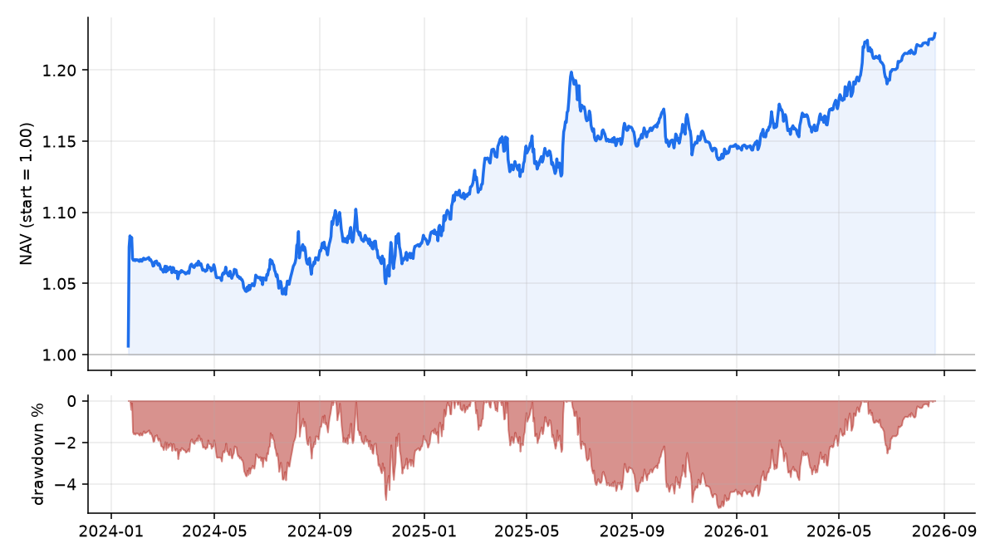

The diversified risk-premium book, paper-traded live
Inception 2024-01-01 · data through 2026-06-16 · updated 2026-06-28 09:18:06 UTC
The capstone of the Alpha Research series
(Paper 7), tracked forward as a paper portfolio.
NAV
1.223
Total return
+22.3%
Annualized
+6.0%
Sharpe
0.95
Volatility
6.3%
Max drawdown
-5.1%

Current target weights & sleeve performance
Sleeve
Weight
Sharpe (since inception)
FX value
47.1%
-0.59
FX carry
37.8%
+0.66
Crypto funding carry
9.1%
+1.01
Crypto trend
6.0%
+0.18
What this is. A risk-parity, 10%/yr-vol-targeted combination of the
daily-tradable survivors from the research program — crypto funding carry, crypto trend, and G10 FX
carry & value — each net of its own trading cost, recomputed daily and marked to current data. It is the
live, out-of-sample test of the program's thesis: that a handful of modest, near-uncorrelated risk premia
diversify into a respectable book. The premia are decaying, so this is the honest forward experiment, not a
backtest.
Caveats
Paper-traded, not live capital — no broker, no real fills; capacity and borrow are
largely internalized in the sleeve returns but not separately stress-modeled.
Daily-tradable subset — equity quality & reversal are part of the full Paper-7 book
but update monthly (Ken French) and need a broker/ETFs to trade daily, so they are tracked separately, not here.
Realized volatility runs below the 10% target due to a leverage cap. Not investment advice.